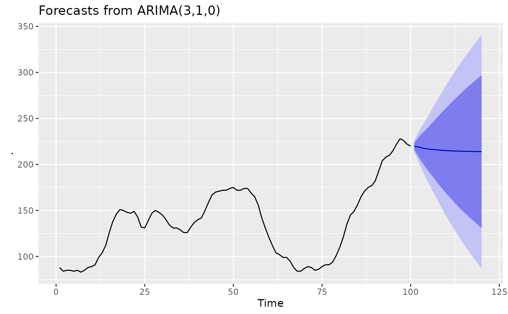
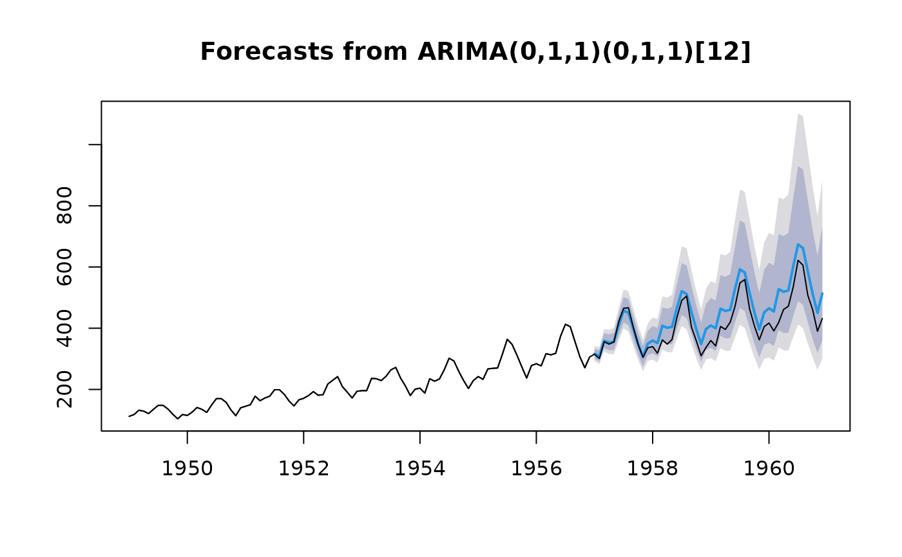

Largely a wrapper for the stats::arima() function in the stats
package. The main difference is that this function allows a drift term. It
is also possible to take an ARIMA model from a previous call to Arima
and re-apply it to the data y.
Arguments
- y
a numeric vector or univariate time series of class
ts- order
a specification of the non-seasonal part of the ARIMA model: the three integer components \((p, d, q)\) are the AR order, the degree of differencing, and the MA order.
- seasonal
a specification of the seasonal part of the ARIMA model, plus the period (which defaults to
frequency(x)). This may be alistwith componentsorderandperiod, or just a numeric vector of length 3 which specifies the seasonalorder. In the latter case the default period is used.- xreg
Optionally, a numerical vector or matrix of external regressors, which must have the same number of rows as
y. It should not be a data frame.- include.mean
Should the ARIMA model include a mean term? The default is
TRUEfor undifferenced series,FALSEfor differenced ones (where a mean would not affect the fit nor predictions).- include.drift
Should the ARIMA model include a linear drift term? (i.e., a linear regression with ARIMA errors is fitted.) The default is
FALSE.- include.constant
If
TRUE, theninclude.meanis set to beTRUEfor undifferenced series andinclude.driftis set to beTRUEfor differenced series. Note that if there is more than one difference taken, no constant is included regardless of the value of this argument. This is deliberate as otherwise quadratic and higher order polynomial trends would be induced.- lambda
Box-Cox transformation parameter. If
lambda = "auto", then a transformation is automatically selected usingBoxCox.lambda. The transformation is ignored if NULL. Otherwise, data transformed before model is estimated.- biasadj
Use adjusted back-transformed mean for Box-Cox transformations. If transformed data is used to produce forecasts and fitted values, a regular back transformation will result in median forecasts. If biasadj is
TRUE, an adjustment will be made to produce mean forecasts and fitted values.- method
fitting method: maximum likelihood or minimize conditional sum-of-squares. The default (unless there are missing values) is to use conditional-sum-of-squares to find starting values, then maximum likelihood. Can be abbreviated.
- model
Output from a previous call to
Arima. If model is passed, this same model is fitted toywithout re-estimating any parameters.- x
Deprecated. Included for backwards compatibility.
- ...
Additional arguments to be passed to
stats::arima().
Value
See the stats::arima() function in the stats package.
The additional objects returned are:
- x
The time series data
- xreg
The regressors used in fitting (when relevant).
- sigma2
The bias adjusted MLE of the innovations variance.
Details
The fitted model is a regression with ARIMA(p,d,q) errors
$$y_t = c + \beta' x_t + z_t$$
where \(x_t\) is a vector of regressors at time \(t\) and \(z_t\) is an
ARMA(p,d,q) error process. If there are no regressors, and \(d=0\), then c
is an estimate of the mean of \(y_t\). For more information, see Hyndman &
Athanasopoulos (2018). For details of the estimation algorithm, see the
stats::arima() function in the stats package.
References
Hyndman, R.J. and Athanasopoulos, G. (2018) "Forecasting: principles and practice", 2nd ed., OTexts, Melbourne, Australia. https://OTexts.com/fpp2/.
Examples
library(ggplot2)
WWWusage |>
Arima(order = c(3, 1, 0)) |>
forecast(h = 20) |>
autoplot()

# Fit model to first few years of AirPassengers data
air.model <- Arima(
window(AirPassengers, end = 1956 + 11 / 12),
order = c(0, 1, 1),
seasonal = list(order = c(0, 1, 1), period = 12),
lambda = 0
)
plot(forecast(air.model, h = 48))
lines(AirPassengers)

# Apply fitted model to later data
air.model2 <- Arima(window(AirPassengers, start = 1957), model = air.model)
# Forecast accuracy measures on the log scale.
# in-sample one-step forecasts.
accuracy(air.model)
#> ME RMSE MAE MPE MAPE MASE ACF1
#> Training set 0.3576253 7.89734 5.788344 0.1458472 2.670181 0.1982148 0.05807465
# out-of-sample one-step forecasts.
accuracy(air.model2)
#> ME RMSE MAE MPE MAPE MASE
#> Training set 0.5159268 12.13132 8.14054 0.07949083 1.900931 0.2266508
#> ACF1
#> Training set -0.2166661
# out-of-sample multi-step forecasts
accuracy(
forecast(air.model, h = 48, lambda = NULL),
log(window(AirPassengers, start = 1957))
)
#> ME RMSE MAE MPE MAPE MASE
#> Training set 0.35762533 7.8973404 5.78834425 0.1458472 2.670181 0.1982148
#> Test set -0.08403416 0.1031891 0.08801596 -1.3982000 1.463555 0.0030140
#> ACF1 Theil's U
#> Training set 0.05807465 NA
#> Test set 0.75730561 0.9290965